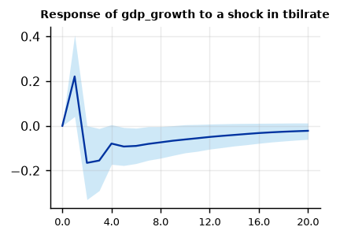
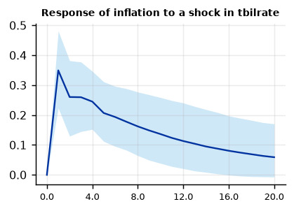

Run this model on your own data in Open Econometric Systems →
Step 1The question and the model
What happens to output and inflation after an unexpected rise in the short-term interest rate? This is the classic question of the monetary VAR. The model is a VAR(\(p\)) in three variables, quarterly GDP growth, CPI inflation and the 3-month Treasury bill rate:
With \(p = 4\) lags each equation has \(1 + 3 \times 4 = 13\) coefficients, 39 in all, plus 6 in \(\Sigma\). Fifty years of quarterly data give about 200 observations: enough to estimate the coefficients, but not to estimate them precisely. Unrestricted OLS fits the noise, impulse responses come out jagged, and forecasts are poor.
A Bayesian VAR adds a prior that pulls every coefficient towards a sensible benchmark. The Minnesota prior (Litterman 1986) says that each variable behaves like its own random walk or white noise, that recent lags matter more than distant ones, and that other variables' lags matter less than a variable's own. The data then move the coefficients away from this benchmark only as far as they have evidence for.
| Term | Meaning | Default here |
|---|---|---|
| \(\delta_i\) | prior mean of variable \(i\)'s own first lag | 1 for an I(1) series in levels, 0 for a stationary one |
| \(\lambda_1\) | overall tightness: how strongly all coefficients are pulled to the prior | 0.2, then chosen by the data |
| \(\lambda_2\) | extra tightness on the lags of other variables | 0.5 |
| \(\lambda_3\) | how fast the prior tightens with the lag length (\(1/l^{\lambda_3}\)) | 1 |
| \(\lambda_4\) | tightness on the constant | 100 (essentially flat) |
Four priors, one idea
The OES engine offers the four priors of the ECB's BEAR toolbox. They share the Minnesota means and scales and differ in how they treat \(\Sigma\):
- Minnesota (Litterman): \(\Sigma\) is fixed at the residual variances of univariate AR models. Exact, fast, equation by equation. Good for forecasting.
- Normal-Wishart: \(\Sigma\) is estimated with an inverse-Wishart prior, and the posterior and the marginal likelihood are analytic, so lag length and tightness can be chosen by the data. It forces \(\lambda_2 = 1\).
- Independent Normal-Wishart: frees \(\lambda_2\) and allows block exogeneity; estimated by Gibbs sampling.
- Normal-diffuse: Minnesota prior on the coefficients, no information on \(\Sigma\); Gibbs sampling.
Start with Normal-Wishart to choose the lags and \(\lambda_1\), then report the prior you prefer and show the others as robustness.
How to write it: the model
We estimate a Bayesian VAR in real GDP growth, CPI inflation and the 3-month Treasury bill rate, \(y_t = c + \sum_{l=1}^{p} A_l y_{t-l} + u_t\), \(u_t \sim N(0,\Sigma)\), on quarterly U.S. data for 1959Q3–2009Q3. Following Litterman (1986) and Kadiyala and Karlsson (1997), we use a Normal-Wishart prior with Minnesota moments: the prior mean of each variable's own first lag is one for the interest rate, which is persistent, and zero for growth and inflation; all other coefficients have prior mean zero, with prior standard deviations that shrink with the lag length.
Step 2Load the data and test for unit roots
The prior mean of the own first lag depends on whether a series is persistent. Test first.
import numpy as np
import pandas as pd
import oes_engine as oes # pip install -e open-econometric-systems/oes-engine
data = open("us_macro.csv").read()
df = pd.read_csv("us_macro.csv")
print(df[["date", "gdp_growth", "inflation", "tbilrate"]].describe().round(2).loc[["count", "mean", "std", "min", "max"]])
spec = dict(vars=["gdp_growth", "inflation", "tbilrate"], time="date", lags=4, prior="nw", lambda1=0.2,
delta="0, 0, 1", sens_shock="tbilrate", sens_response="gdp_growth")
r = oes.run("bvar", data, spec)
oes.show(r, "Unit-root") gdp_growth inflation tbilrate
count 202.00 202.00 202.00
mean 3.10 3.98 5.32
std 3.52 3.25 2.80
min -8.28 -8.79 0.12
max 15.43 14.62 15.33
Unit-root tests
ADF level, constant: p ADF level, trend: p ADF first difference: p KPSS level: p Conclusion
Variable
gdp_growth 0.0000 0.0000 0.0 0.1000 I(0)
inflation 0.0271 0.0822 0.0 0.0808 I(0)
tbilrate 0.2805 0.4462 0.0 0.0538 I(1)
Note: ADF H0: unit root; KPSS H0: stationary (p-values are truncated at 0.01 and 0.10). For a Minnesota-type prior use a prior mean of 1 on the own first lag for I(1) variables in levels (random walk) and 0 for stationary variables. A VAR in levels with a random-walk prior remains valid when the variables are I(1) or cointegrated (Sims, Stock and Watson 1990).How to read it
GDP growth and inflation reject a unit root in levels (ADF p-values below 0.05) and are treated as stationary: prior mean 0 on their own first lag. The T-bill rate does not reject; it is stationary only after differencing, so it gets a random-walk prior (prior mean 1). Notice that nothing is differenced: a Bayesian VAR is estimated in levels, and the prior handles the persistence. Sims, Stock and Watson (1990) show that inference on impulse responses remains valid in levels even with unit roots or cointegration.
Step 3Choose the lag length and the tightness
The Normal-Wishart prior gives the marginal likelihood, the probability of the data under the model with the coefficients integrated out. It rewards fit and penalises complexity automatically, so it can choose both the number of lags and \(\lambda_1\) (Giannone, Lenza and Primiceri 2015).
oes.show(r, "Lag order")
oes.show(r, "Overall tightness")Lag order: Bayesian marginal likelihood and BIC
Log marginal likelihood (higher is better) BIC of the OLS VAR (lower is better)
Lags
1 -1226.032 3.8637
2 -1215.847 3.8769
3 -1210.105 3.9040
4 -1209.707 4.0682
5 -1208.721 4.2123
6 -1207.614 4.3131
7 -1207.258 4.5501
8 -1207.261 4.7121
Note: Common sample; Normal-Wishart prior with lambda1 = 0.2. Highest marginal likelihood: 7 lag(s).
Overall tightness lambda1 by marginal likelihood
Log marginal likelihood
lambda1
0.02 -1292.188
0.05 -1264.523
0.10 -1246.079
0.20 -1235.260
0.50 -1239.139
1.00 -1255.290
5.00 -1309.492
Note: Normal-Wishart prior, 4 lag(s). The data prefer lambda1 = 0.2 (Giannone, Lenza and Primiceri 2015).How to read it
- Lags. The marginal likelihood rises quickly up to three or four lags and then flattens: extra lags add little once the prior has shrunk them. BIC, which has no prior to shrink with, prefers fewer lags. With quarterly data four lags is the convention, and the marginal likelihood supports it; more lags would be harmless under the prior.
- Tightness. The marginal likelihood peaks at \(\lambda_1 = 0.2\): looser priors overfit, tighter ones ignore the data. This is the value used below. Always report how \(\lambda_1\) was chosen; a value picked to deliver a result is a red flag for referees.
Step 4Estimate the BVAR
oes.summary(r)
oes.show(r, "Equation: tbilrate")Observations: 198
Prior: Normal-Wishart
Lags: 4
lambda1: 0.2
Share of stable draws: 0.982
Distance from OLS (relative): 0.556
Log marginal likelihood: -1235.26
Equation: tbilrate
Mean Std. dev. 2.5% Median 97.5% P(> 0)
Parameter
const -0.0267 0.1641 -0.3434 -0.0275 0.2864 0.426
L1.gdp_growth 0.0338 0.0179 -0.0013 0.0332 0.0678 0.973
L1.inflation 0.0003 0.0255 -0.0473 0.0002 0.0487 0.502
L1.tbilrate 0.9315 0.0656 0.8064 0.9316 1.0633 1.000
L2.gdp_growth 0.0221 0.0152 -0.0082 0.0217 0.0521 0.929
L2.inflation 0.0315 0.0215 -0.0095 0.0316 0.0722 0.927
L2.tbilrate -0.0768 0.0654 -0.2007 -0.0795 0.0506 0.144
L3.gdp_growth 0.0056 0.0125 -0.0203 0.0060 0.0291 0.657
L3.inflation 0.0329 0.0183 -0.0020 0.0323 0.0676 0.964
L3.tbilrate 0.0979 0.0499 0.0029 0.0970 0.1969 0.979
L4.gdp_growth 0.0017 0.0101 -0.0190 0.0020 0.0204 0.571
L4.inflation 0.0026 0.0160 -0.0279 0.0028 0.0335 0.567
L4.tbilrate -0.0377 0.0377 -0.1118 -0.0371 0.0349 0.155How to read it
Each row is a posterior: its mean, standard deviation, 95% credible interval and the posterior probability that the coefficient is positive. The interest-rate equation is a monetary policy rule in reduced form: the T-bill rate is highly persistent (own first lag about 0.93) and rises after strong GDP growth and higher inflation, with posterior probabilities above 0.9 for several of these lags. "Distance from OLS" in the summary shows how much the prior moved the coefficients: about half, which is typical for a VAR of this size.
A credible interval is read literally: given the model and the prior, there is a 95% probability that the coefficient lies in it. Bayesian results do not need p-values, but P(> 0) close to 0 or 1 plays the same role.
Step 5Impulse responses: a monetary policy shock
The policy shock is identified recursively (Cholesky), with the interest rate ordered last: the Fed reacts within the quarter to output and inflation, while output and prices respond to the interest rate only with a lag. This is the standard ordering of Christiano, Eichenbaum and Evans (1999).
fig = oes.plot(r, "Response of gdp_growth to a shock in tbilrate")
fig = oes.plot(r, "Response of inflation to a shock in tbilrate")

How to read it
After a one-standard-deviation rise in the T-bill rate, GDP growth falls, and the 68% credible band stays below zero for about two years. Inflation, however, rises before it falls back: the well-known price puzzle (Sims 1992). It usually means the VAR omits information the Fed uses to forecast inflation, such as commodity prices; the FAVAR guide shows how adding many indicators addresses it. Report the puzzle honestly rather than hiding it; it is a known limitation of small monetary VARs.
Bayesian VAR papers report 68% bands (16th to 84th percentiles) by convention, as here; add 90% bands if referees ask.
Step 6How important is the shock? Variance decomposition
oes.show(r, "Forecast-error variance")Forecast-error variance decomposition (posterior median, %)
Horizon shock: gdp_growth shock: inflation shock: tbilrate
Variable
gdp_growth 1 100.0 0.0 0.0
gdp_growth 4 96.3 2.1 1.4
gdp_growth 8 93.3 4.7 1.7
gdp_growth 12 92.2 5.4 2.0
gdp_growth 20 91.6 5.9 2.2
inflation 1 1.5 98.5 0.0
inflation 4 3.9 91.8 3.5
inflation 8 5.5 88.4 5.0
inflation 12 6.3 86.7 5.7
inflation 20 7.1 85.3 6.4
tbilrate 1 9.2 11.7 78.6
tbilrate 4 20.4 14.7 64.1
tbilrate 8 24.4 19.3 54.2
tbilrate 12 25.4 21.8 50.2
tbilrate 20 25.9 23.7 47.8
Note: Share of each variable's h-step forecast-error variance due to each Cholesky shock.How to read it
Monetary policy shocks explain only a few percent of the forecast-error variance of GDP growth and inflation, even after five years. Most movements in output and inflation are due to other shocks; the interest rate itself is driven increasingly by output and inflation, as the policy rule implies. This is the standard result: policy matters for how the economy responds, but surprises in policy are a small source of fluctuations.
Step 7Diagnostics: residuals, stability and convergence
oes.show(r, "Residual diagnostics")
oes.show(r, "Stability")Residual diagnostics (at the posterior mean)
Statistic p-value Detail
Test
Portmanteau (Hosking), 12 lags 160.7980 0.0007 df = 108; H0: no residual autocorrelation (approximate after estimating lags)
Ljung-Box, gdp_growth 10.4062 0.5804 H0: no autocorrelation
Jarque-Bera, gdp_growth 32.6349 0.0000 H0: normal residuals
ARCH LM, gdp_growth 3.9381 0.4144 H0: no conditional heteroskedasticity
Ljung-Box, inflation 14.6870 0.2590 H0: no autocorrelation
Jarque-Bera, inflation 124.0184 0.0000 H0: normal residuals
ARCH LM, inflation 28.1739 0.0000 H0: no conditional heteroskedasticity
Ljung-Box, tbilrate 34.9229 0.0005 H0: no autocorrelation
Jarque-Bera, tbilrate 1909.6458 0.0000 H0: normal residuals
ARCH LM, tbilrate 50.7086 0.0000 H0: no conditional heteroskedasticity
Stability
Value
Item
Share of posterior draws with all companion roots inside the unit circle 0.9820
Largest root modulus at the posterior mean 0.9326
Note: Unit roots in levels data make many draws non-stationary; that is expected with a random-walk prior and is not a failure.How to read it
- Stability. Almost every posterior draw has all roots inside the unit circle, and the largest root at the posterior mean is below one: the VAR is stationary and impulse responses die out.
- Autocorrelation. Ljung-Box does not reject for GDP growth and inflation but does for the T-bill rate, and the joint portmanteau test rejects. A fifth or sixth lag removes most of it; check that the responses do not change (they do not, in Step 7).
- Normality and ARCH. Strongly rejected for inflation and the interest rate. The 1970s oil shocks and the Volcker disinflation produce large residuals, and their variance changes over time. The coefficient estimates remain valid, but bands that assume constant variance are too narrow in volatile periods. The SV-VAR guide models this directly; mention it as a limitation.
With the Normal-Wishart prior the posterior draws are independent, so there is nothing to converge. The Gibbs samplers (Independent Normal-Wishart, Normal-diffuse) need a check:
r_inw = oes.run("bvar", data, dict(spec, prior="inw", draws=2000, burn=1000))
oes.show(r_inw, "MCMC")MCMC convergence diagnostics (coefficients)
Effective sample size Efficiency (ESS / draws) Geweke z p-value
Parameter
gdp_growth: const 2000.0 1.0 -1.131 0.2579
inflation: const 2000.0 1.0 0.070 0.9445
gdp_growth: L1.gdp_growth 2000.0 1.0 0.758 0.4487
tbilrate: L1.gdp_growth 2000.0 1.0 1.109 0.2675
inflation: L1.inflation 2000.0 1.0 -0.340 0.7341
inflation: L1.tbilrate 2000.0 1.0 0.298 0.7660
tbilrate: L1.tbilrate 2000.0 1.0 0.268 0.7884
gdp_growth: L2.gdp_growth 2000.0 1.0 1.722 0.0851
gdp_growth: L2.inflation 2000.0 1.0 0.403 0.6872
inflation: L2.inflation 2000.0 1.0 0.230 0.8183
inflation: L3.inflation 2000.0 1.0 2.399 0.0164
tbilrate: L3.tbilrate 2000.0 1.0 -0.619 0.5357
Note: Geweke compares the first 10% with the last 50% of the chain: |z| > 1.96 suggests the chain has not settled; run more draws or a longer burn-in. ESS above about 200 gives reliable posterior means and bands. Lowest efficiency: 1.0.How to read it
Effective sample sizes are close to the number of draws and the Geweke statistics are small: the chain mixes well and has settled. If |z| were above 2 for several parameters, increase the burn-in.
Step 8Robustness: prior, tightness and forecasts
A result that depends on the prior is not a result. Three checks:
oes.show(r, "Prior sensitivity")
for prior in ["minnesota", "nw", "inw", "nd"]:
rr = oes.run("bvar", data, dict(spec, prior=prior))
irf = next(c for c in rr["charts"] if c["title"] == "Response of gdp_growth to a shock in tbilrate")["series"][0]["y"]
print(f"{prior:10s} response of GDP growth after 4, 8, 12 quarters: " + ", ".join(f"{irf[h]:+.3f}" for h in (4, 8, 12)))Prior sensitivity: response of gdp_growth to a tbilrate shock
h = 0 h = 4 h = 8 h = 12
lambda1
0.05 0.0 -0.1185 -0.1106 -0.0933
0.1 0.0 -0.1085 -0.1081 -0.0884
0.2 0.0 -0.0818 -0.0731 -0.0508
0.5 0.0 -0.0205 -0.0365 -0.0042
1.0 0.0 0.0277 -0.0335 0.0046
OLS (no prior) 0.0 0.0599 -0.0363 0.0059
Note: Posterior-mean responses under looser and tighter priors. Conclusions that hold across the rows are robust to the prior.
minnesota response of GDP growth after 4, 8, 12 quarters: -0.113, -0.104, -0.082
nw response of GDP growth after 4, 8, 12 quarters: -0.079, -0.074, -0.050
inw response of GDP growth after 4, 8, 12 quarters: -0.080, -0.079, -0.063
nd response of GDP growth after 4, 8, 12 quarters: -0.079, -0.079, -0.063How to read it
- Tightness. With tight and moderate priors (\(\lambda_1 \le 0.2\)) the output response is negative at every horizon. With very loose priors and with OLS, the response at four quarters turns positive: without shrinkage the VAR fits noise, and the sign is not robust. This is exactly why a Bayesian VAR is used, and the table is the evidence a referee needs.
- Prior family. All four priors give a fall in GDP growth of similar size. Report the Normal-Wishart results and these as robustness.
oes.show(r, "Out-of-sample")Out-of-sample forecast RMSE (recursive, last 20% of the sample, 38 forecasts)
Horizon RMSE gdp_growth RMSE inflation RMSE tbilrate
Model
BVAR 1 2.8534 3.0924 0.5883
BVAR 4 3.4712 3.3026 1.8417
OLS VAR 1 2.8274 3.2156 0.5840
OLS VAR 4 3.4003 3.4269 1.7889
Random walk 1 2.9150 3.5139 0.5583
Random walk 4 3.2805 4.1690 1.7917
Note: The BVAR uses the Normal-Wishart posterior mean with the same lambda1; lower RMSE is better. Columns follow the variable order.How to read it
Recursive one- and four-quarter-ahead forecasts over the last 20% of the sample. The BVAR beats the OLS VAR for inflation at both horizons and is close for the other variables; a random walk is hard to beat for the interest rate at short horizons, as usual. In a forecasting paper, test the differences formally with the Diebold-Mariano test and report several evaluation windows.
Step 9Block exogeneity
When some variables cannot be affected by the others, such as world variables in a model of a small open economy, the Independent Normal-Wishart and Normal-diffuse priors can impose it: the coefficients of the other variables in the block's equations get (almost) zero prior variance.
rb = oes.run("bvar", data, dict(spec, prior="inw", block=["gdp_growth"], draws=1000, burn=500))
oes.show(rb, "Equation: gdp_growth", rows=7)Equation: gdp_growth
Mean Std. dev. 2.5% Median 97.5% P(> 0)
Parameter
const 1.9906e+00 3.6494e-01 1.2866 1.9833e+00 2.6974 1.000
L1.gdp_growth 2.4514e-01 6.7131e-02 0.1095 2.4688e-01 0.3767 1.000
L1.inflation 2.0000e-06 1.4100e-04 -0.0003 5.0000e-06 0.0003 0.510
L1.tbilrate 4.0000e-06 3.9400e-04 -0.0008 -6.0000e-06 0.0007 0.496
L2.gdp_growth 1.1276e-01 5.8372e-02 -0.0044 1.1364e-01 0.2322 0.973
L2.inflation 1.0000e-06 7.1000e-05 -0.0001 1.0000e-06 0.0001 0.511
L2.tbilrate 3.0000e-06 1.9400e-04 -0.0004 1.4000e-05 0.0004 0.523Here GDP growth is (for illustration) made block-exogenous: the lags of inflation and the interest rate in its equation are pushed to zero. In a real application use it for foreign variables, oil prices or anything determined outside the economy you model.
Step 10Write the results
How to write it: results
The marginal likelihood selects four lags and an overall tightness of \(\lambda_1 = 0.2\). Figure 1 shows the responses to a one-standard-deviation monetary policy shock, identified recursively with the interest rate ordered last. GDP growth falls by about 0.1 percentage point within a year, and the 68% credible band excludes zero for two years. Inflation initially rises, the price puzzle familiar from small monetary VARs (Sims 1992), before returning to its baseline. Policy shocks account for less than 3% of the forecast-error variance of output growth at all horizons. The output response is negative under all four priors (Minnesota, Normal-Wishart, Independent Normal-Wishart and Normal-diffuse) and for any \(\lambda_1 \le 0.2\); with much looser priors, and with OLS, the response becomes erratic, which illustrates the value of shrinkage in a sample of this length.
| Report | What | Where |
|---|---|---|
| Data | Sources, sample, transformations, unit-root tests | Step 2 |
| Prior | Family, \(\delta_i\), \(\lambda_1\)–\(\lambda_4\), how \(\lambda_1\) and \(p\) were chosen | Steps 1 and 3 |
| Identification | Ordering and its economic justification | Step 5 |
| Results | Impulse responses with 68% (and 90%) bands, variance decomposition | Steps 5 and 6 |
| Diagnostics | Stability, residual tests, MCMC convergence for Gibbs samplers | Step 7 |
| Robustness | Other priors, other tightness, more lags, forecast comparison | Step 8 |
References. Litterman (1986), Journal of Business and Economic Statistics; Kadiyala and Karlsson (1997), Journal of Applied Econometrics; Sims, Stock and Watson (1990), Econometrica; Christiano, Eichenbaum and Evans (1999), Handbook of Macroeconomics; Bańbura, Giannone and Reichlin (2010), Journal of Applied Econometrics; Giannone, Lenza and Primiceri (2015), Review of Economics and Statistics; Dieppe, Legrand and van Roye (2016), The BEAR toolbox, ECB Working Paper 1934.